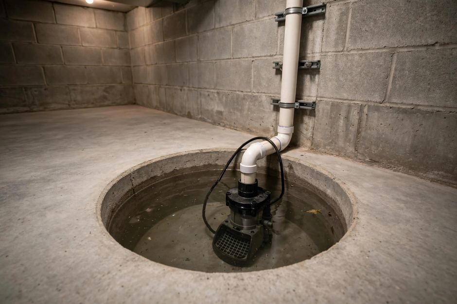
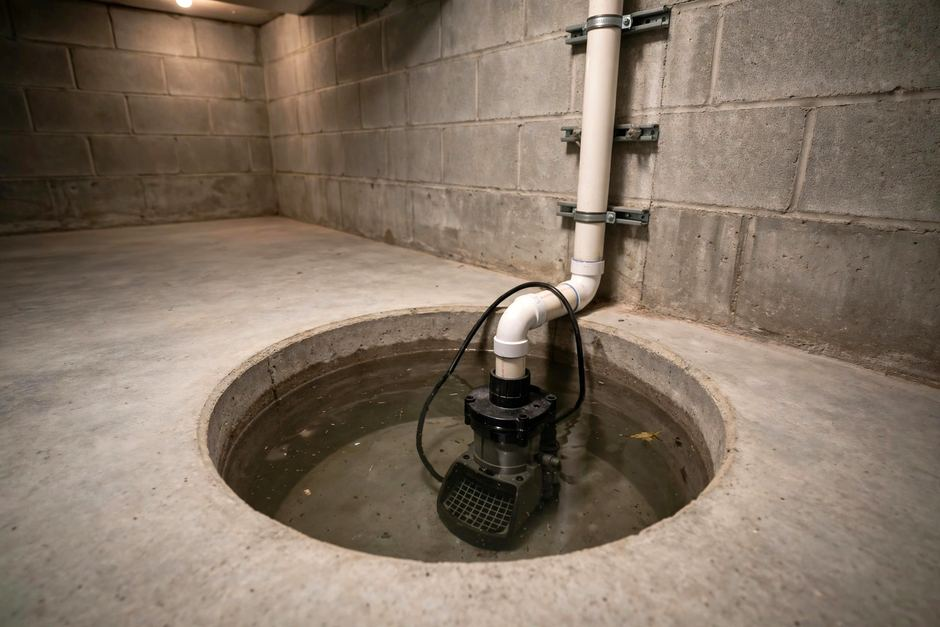
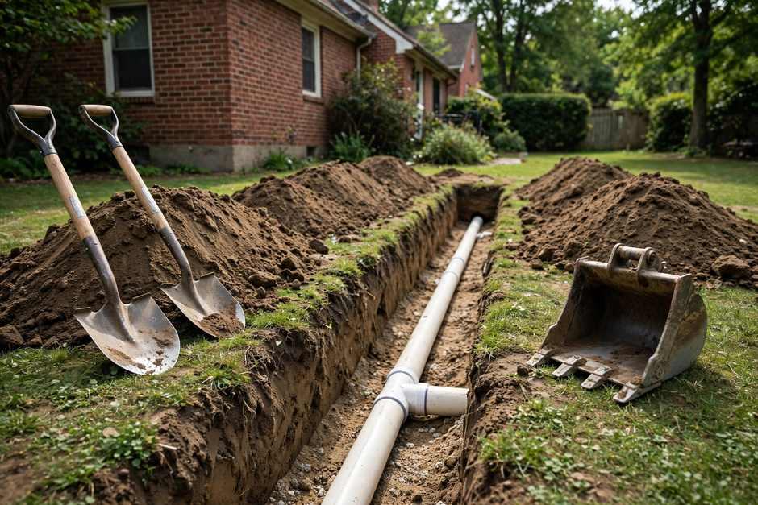

Below-Grade Plumbing Hub
Basement Plumbing in Belleville, IL
Basement plumbing covers several connected systems, including sump pumps, floor drains, sewage ejectors, and piping below grade. Hinkle Plumbing Company assesses how each part behaves during wet conditions in Belleville, IL. This hub page explains each system and points to detailed service pages, starting with sump pump work for below-grade water control.
1610 W Main St, Belleville, IL 62220Monday through Friday, 8:00 AM to 4:30 PM(618) 677-6556
What This Hub Covers
Basement Systems Covered on This Page
Basement plumbing is a cluster of systems rather than a single job. Bathroom rough-in work, ejector systems, floor drains, sump pumps, and below-grade piping each behave differently, and each is assessed on its own findings in Belleville homes.
Basement Bathroom Plumbing
Basement bathroom work covers rough-in piping, fixture connections, and drainage for below-grade bathrooms. Drainage falls and venting needs are reviewed during planning, and fixture placement is matched to existing drain locations and building layout.
Sewage Ejector Systems
Sewage ejector systems lift waste from below-grade fixtures where gravity drainage is not available. Pump operation, basin condition, and discharge piping are reviewed, and sewage handling is kept separate from groundwater handling in planning.
Floor Drain Backup Review
Floor drain backup can reflect a blockage, a surcharging sewer, or a drain fault, and each cause calls for a different response. Drain condition, sewer behavior, and wet-condition patterns are reviewed together before a fix is planned.
Sump Pump Systems
Sump pump systems collect groundwater and move it away from the foundation area. Pump operation, basin condition, discharge routing, and backup power options are reviewed, and discharge guidance from the City is explained during planning.
Leaks Below Grade
Leaks below grade can appear at joints, at floor penetrations, or along buried piping, and signs are often subtle. Visible piping, damp patterns, and water use findings are reviewed to narrow the source before repair scope is discussed.
Burst Pipe Concerns
Piping in unconditioned basement areas faces freeze stress during cold periods, and splits often show when thawing occurs. Shutoff control, insulation context, and pipe condition are reviewed, and repair scope reflects the failure pattern found.
About Hinkle Plumbing Company
Basement Plumbing From a Belleville Base
From its Belleville office, Hinkle Plumbing Company takes on basement plumbing assessment and repair for properties across the city. Each below-grade system is reviewed on its own findings, and scope is discussed before work begins.
Basements in Belleville sit within a mixed sewer context, where older combined sewers and separate systems both exist and heavy rain can bring basement backups. Clay-rich soil, seasonal rain, and Richland Creek drainage shape how groundwater reaches below-grade spaces. Hinkle Plumbing Company reviews sump, drain, and piping findings together, and sewer backup patterns are considered where floor drains are involved.

How we workImage showing basement piping, a floor drain, and a sump basin in a Belleville home.
How Assessment Works
Basement Assessment Steps
The steps flex with the condition of the job, but the sequence stays the same.
Describe the Pattern
Wet-condition timing, drain behavior, pump operation, and damp locations are discussed to narrow the system involved. Pattern details help separate groundwater concerns from sewer concerns and from piping leaks below grade.
Inspect Visible Systems
Visible piping, drains, basins, pumps, and shutoffs are inspected for condition and operation. Findings are noted for each system separately, because basement concerns often involve more than one system at the same time.
Review Discharge Routing
Sump discharge routing is reviewed against City guidance, which says the sump pipe should always discharge directly into your yard or storm sewer. Guidance status is explained plainly, and routing is discussed without presenting guidance as a code requirement.
Plan System by System
Each system is planned on its own findings, with pump, drain, ejector, and piping scopes kept distinct. Related service pages explain each system in detail, and the overall plan reflects the combined findings for the basement.
Check Operation
After work, pump operation, drain flow, and fixture drainage are checked where relevant. Findings are discussed, and maintenance observations are shared so below-grade systems are understood as ongoing parts of the home.
Systems and Approaches
Basement Methods and System Choices
Basement methods reflect the system involved, the building layout, and wet-condition behavior. Options below are discussed during assessment, and suitability is confirmed for the specific basement rather than assumed.
Sump Collection and Discharge
Sump basins collect groundwater for removal through a discharge pipe routed away from the foundation. Basin size, pump capacity context, and discharge routing are reviewed together, and City guidance on discharge routing is explained during planning.
Backwater Valve Option
A backwater valve may be installed where backflow into a building drain could occur, and suitability is assessed for the specific drain layout. The valve is presented as a permissive option, not as a requirement, and placement reflects drain configuration.
Floor Drain Clearing
Floor drains are cleared and checked for flow, trap condition, and debris buildup. Where backup recurs, sewer condition and wet-condition patterns are reviewed, because clearing alone does not resolve a sewer-side cause.
Ejector Basin Review
Ejector basins, pumps, and discharge piping are reviewed for operation and condition. Basin covers, venting context, and discharge routing are checked, and sewage and groundwater handling remain separate in planning and in piping.
Below-Grade Pipe Repair
Below-grade piping is repaired with attention to material, joint condition, and access constraints. In homes from earlier building eras, expect cast-iron drains and check joint condition, because joint failure and corrosion shape repair scope.
Sewer Lateral Program Note
The City Sewer Lateral Repair Program addresses the portion of a sewer lateral beyond the property line. Readers are directed to check current City program details for scope and process before planning work.
Common Patterns
Common Basement Plumbing Patterns
Basement concerns often appear during wet conditions or after heavy rain, and patterns help identify the system involved. The examples below describe common patterns without describing a specific property or job.

Water at the Floor Drain After Rain
A common call describes water appearing at a floor drain after heavy rain, with no fixture backup explaining the pattern. Assessment reviews drain condition, sewer behavior, and wet-condition timing to separate a drain blockage from sewer surcharging. Sump operation and discharge routing are also reviewed, because basement water can involve more than one system, and the plan reflects the combined findings.
Sump Pump Running Without Clearing Water
A common call describes a sump pump running without clearing basin water, or a basin that refills in a repeating pattern. Assessment checks pump operation, basin condition, discharge routing, and power supply context. Findings shape whether repair, replacement, or discharge adjustment is discussed, and City discharge guidance is explained as part of the review. Assessment findings are discussed plainly before work scope is set for the property.
Signs to Note
Basement Signs That Call for Assessment
Most calls fall into a few patterns. Knowing which pattern applies decides what the visit involves.
Floor Drain Backup
Backup at a floor drain can signal a blockage or sewer surcharging, and wet-condition timing helps separate the causes. Drain and sewer findings are reviewed together, and a backwater valve may be discussed as an option where suitable.
Sump Pump Not Clearing
A pump that runs without clearing water, cycles in a repeating pattern, or stays silent during wet conditions calls for assessment. Pump, basin, discharge, and power findings are reviewed together before repair or replacement is discussed.
Damp Walls or Floor Areas
Damp walls or floor areas can reflect groundwater pressure, a piping leak, or seepage through cracks. Damp patterns, piping condition, and soil context are reviewed to narrow the source before repair scope is set.
Drain Odor in the Basement
Drain odor can reflect a dry trap, a venting concern, or a drain fault, and the pattern across drains helps narrow the cause. Trap condition and drain flow are checked, and findings shape the response for the basement.
Scope Factors
What Shapes Basement Plumbing Scope
System type, access, and wet-condition findings shape basement scope.
Number of Systems Involved
Basement work can involve sump, drain, ejector, and piping systems together or separately. The count of systems and the condition of each one shape the overall scope, and findings are discussed by phone before work is scheduled.
Access Below Grade
Finished walls, stored items, and limited access to piping and basins affect the work sequence. Access conditions are reviewed during assessment, and scope reflects the effort involved in reaching and restoring the work area.
Discharge and Drainage Work
Discharge routing, drain clearing, and drainage adjustments add scope where routing or flow concerns are found. Routing findings and City guidance are included in the discussion, and readers are invited to call to discuss scope.
Reviews from Google
What Customers Say on Google
★★★★★
“Very prompt and responsive, the worker was friendly and informative! Will use this company again!”
★★★★★
“Don did an outstanding job for me when I needed him and highly recommend his business”
★★★★★
“Rated 5.0 out of 5 across 3 Google reviews, all five stars.”
What does City guidance say about sump pump discharge?
City guidance says the sump pipe should always discharge directly into your yard or storm sewer. This is presented as City guidance, not as a code requirement, and discharge routing is reviewed during assessment with that guidance explained in plain terms.
Is basement plumbing a single service?
No. Basement plumbing is a cluster covering bathroom piping, ejector systems, floor drains, sump pumps, and below-grade piping. Each system is assessed on its own findings, and detailed service pages explain each system separately for clarity. Related system findings are reviewed together, and observations shape the response.
Can a backwater valve help with floor drain backup?
A backwater valve may be installed where backflow into a building drain could occur, and suitability depends on drain layout and sewer behavior. The valve is a permissive option, not a requirement, and placement is assessed for the specific building drain.
What affects the scope of basement plumbing work?
System type, access below grade, discharge routing, drain condition, and the number of systems involved shape the scope. Findings from assessment are reviewed together, and readers are invited to call (618) 677-6556 to discuss scope for a specific basement. Findings are discussed by phone before work is scheduled.
Related services
Other Plumbing Services We Handle

Sump Pump Installation in Belleville, IL
Sump pump work covers installation, repair, replacement, discharge routing, and backup power options for below-grade spaces.
Sewer Backup in Belleville, IL
Sewer backup assessment separates drain blockages from sewer surcharging and reviews wet-condition patterns in Belleville homes.
Leak Detection in Belleville, IL
Leak detection helps locate hidden leaks in below-grade piping and finished basement areas before repair scope is set.Mon–Fri 8:00 AM–4:30 PM
Discuss Basement Plumbing in Belleville
Call (618) 677-6556 during Monday through Friday, 8:00 AM to 4:30 PM to discuss basement plumbing in Belleville. Closed Saturday and Sunday. Sump, drain, and piping findings are reviewed together during assessment.
Talk with the local team
Request Basement Plumbing
Call (618) 677-6556 during office hours, Monday through Friday, 8:00 AM to 4:30 PM. Tell us what is happening and we will talk through the next step.